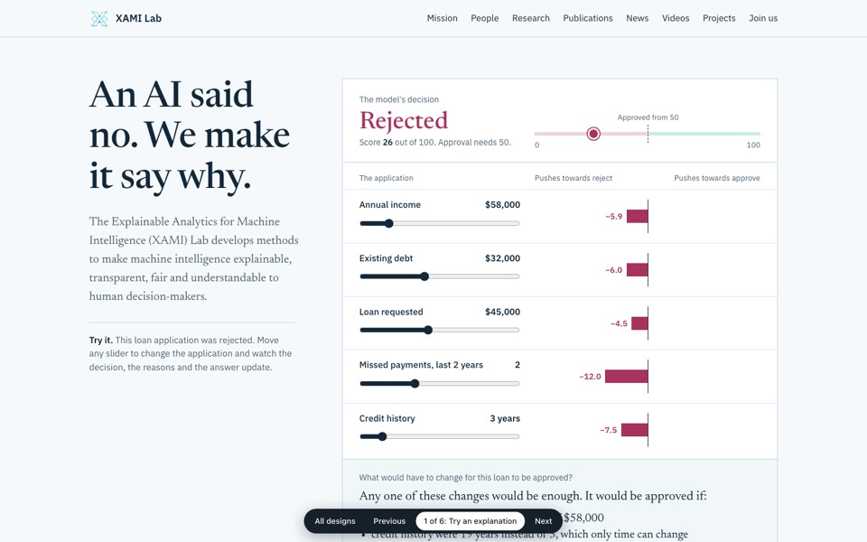
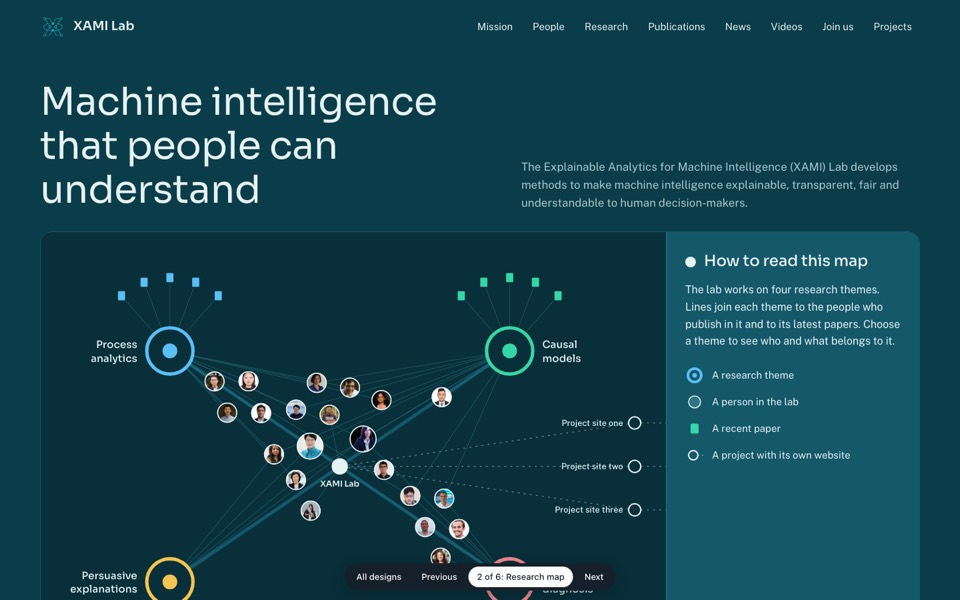
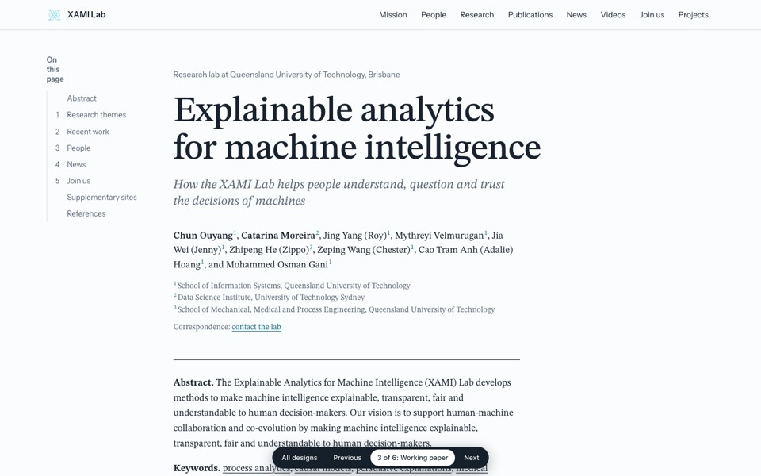
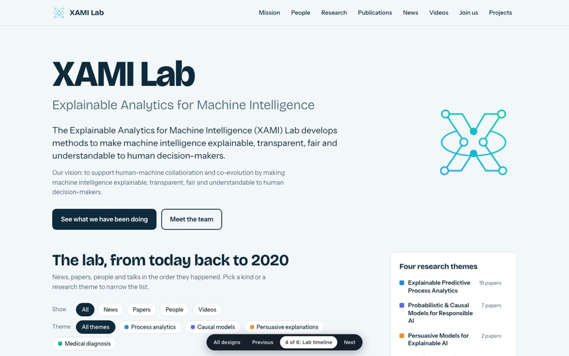
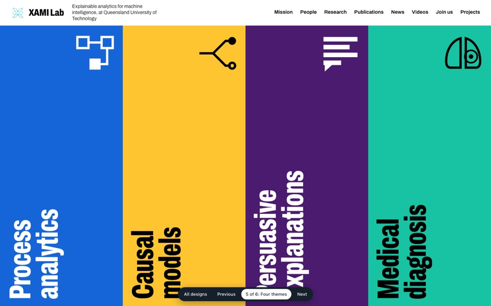
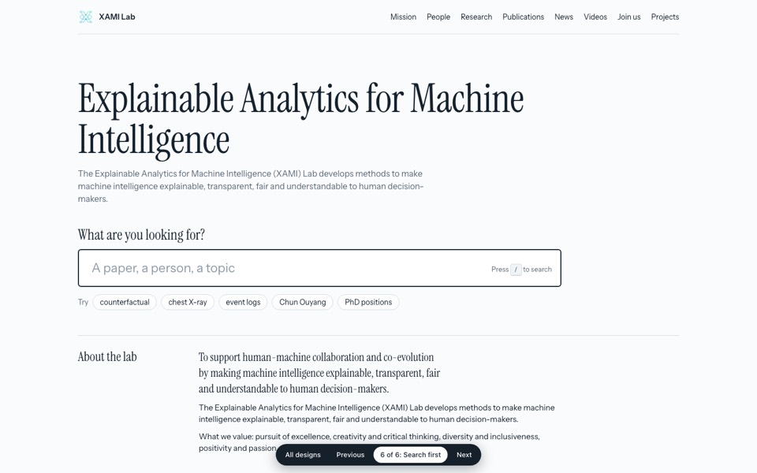

Each design is a different idea of what the lab's website could be, not the same page in different colours. All of them use the lab's real people, papers and research themes.
Open each one and use it as a visitor would. Only the homepage exists at this stage, so links to other pages do not go anywhere yet. The bar at the bottom of each design moves to the next one.

The page opens with a working example: an AI rejects a loan, and the visitor sees why and what would change the result.
Fits if the lab wants visitors to understand its research in the first ten seconds.

A map of the lab drawn like its logo: themes, people and papers as connected points that light up when chosen.
Fits if the lab wants to show how its people and topics connect.

The homepage reads like a well typeset research paper about the lab, with an abstract, figures, side notes and references.
Fits if the main visitors are other researchers and the lab prefers a calm, scholarly feel.

News, papers, graduations and talks on one line through time, newest first, with filters.
Fits if the lab will post news regularly and wants to look active.

Four bold colour panels, one per research theme. Each colour then marks the papers and people of that theme.
Fits if the four themes are the lab's identity and should be remembered.

The page is a tool: one search field that finds any paper, person or topic, above a compact index of the whole lab.
Fits if visitors mostly come to find a specific paper or person.